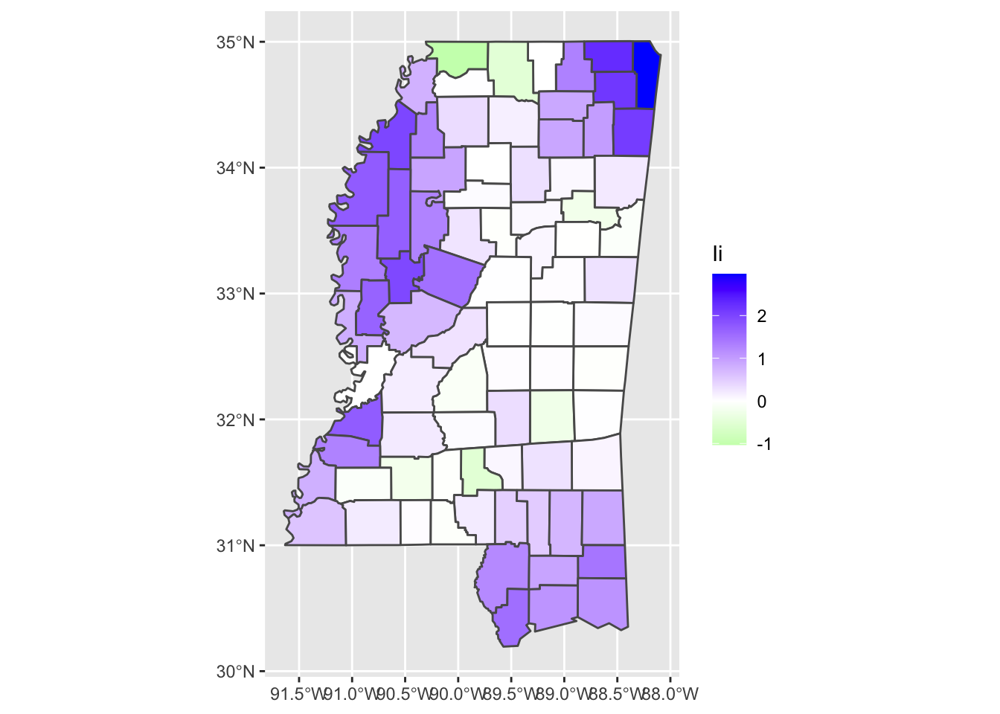

Thursday, October 14, 2022
Today
- Review
- Model adequacy
Suppose you are interested in predicting maximum heart rate by age using 15 randomly chosen people who are tested for maximum heart rate. The data are listed below. Age is in years and heart rate is in beats per minute. Create a data frame called heart.df.
Age <- c(18, 23, 25, 35, 65, 54, 34, 56, 72, 19, 23, 42, 18, 39, 37)
HR <- c(202, 186, 187, 180, 156, 169, 174, 172, 153, 199, 193, 174, 198, 183, 178)
heart.df <- data.frame(HR, Age)You start with a scatter plot of the data.
library(ggplot2)
ggplot(data = heart.df,
mapping = aes(x = Age, y = HR)) +
geom_point()
Maximum heart rate appears to decrease with increasing age as you might have expected.
Next you fit a linear regression model. The model can be used to predict heart rates from age.
model <- lm(HR ~ Age,
data = heart.df)
model##
## Call:
## lm(formula = HR ~ Age, data = heart.df)
##
## Coefficients:
## (Intercept) Age
## 210.0485 -0.7977Given the output from the model, you interpret things as follows: Given the sample of data and the linear regression model, you find that on average a person’s maximum HR decreases by .8 beats per minute (bpm) every year or 8 bpm every decade.
More information about the model is printed using the summary() method.
summary(model)##
## Call:
## lm(formula = HR ~ Age, data = heart.df)
##
## Residuals:
## Min 1Q Median 3Q Max
## -8.9258 -2.5383 0.3879 3.1867 6.6242
##
## Coefficients:
## Estimate Std. Error t value Pr(>|t|)
## (Intercept) 210.04846 2.86694 73.27 < 2e-16 ***
## Age -0.79773 0.06996 -11.40 3.85e-08 ***
## ---
## Signif. codes: 0 '***' 0.001 '**' 0.01 '*' 0.05 '.' 0.1 ' ' 1
##
## Residual standard error: 4.578 on 13 degrees of freedom
## Multiple R-squared: 0.9091, Adjusted R-squared: 0.9021
## F-statistic: 130 on 1 and 13 DF, p-value: 3.848e-08From the table of coefficients you see that the best estimate for the slope is -.798 with a margin of error of +/- .07. The slope estimate is for a population of all people. The \(t\) value for the zero-slope hypothesis is computed as the slope value divided by its standard error.
Here the \(t\) value is -11.4 which gives a \(p\)-value (Pr(>|t|)) less than .001. So you have overwhelming evidence that, given these data, maximum heart rate depends on age (statistically).
The multiple R-squared value (coefficient of determination) is given next. The multiple R-squared is equal to the square of the Pearson correlation coefficient.
The multiple R-squared = 1 - RSS/SSY, where RSS is the residual sum of squares and SSY is the total variation about a constant mean response.
The RSS is the sum of the squared residuals. The RSS is output from the deviance() function applied to the model object.
( RSS <- deviance(model) )## [1] 272.4312SSY is the deviance output from a constant mean model. The constant mean model is estimated by setting the explanatory variable to a constant 1. Call this model0.
model0 <- lm(HR ~ 1,
data = heart.df)
SSY <- deviance(model0)
1 - RSS/SSY## [1] 0.9090967RSS is less than SSY so RSS/SSY will be less that 1. If RSS is much less than SSY then, RSS/SSY is close to zero so R squared is close to 1.
The R-squared multiplied by 100% is the variance of the response variable explained (statistically) by the explanatory variable.
The adjusted R-squared value is smaller than the R-squared value. How much smaller depends on how many variables are in the model. \[ 1 - \frac{n - 1}{n - p} (1 - R^2 ) \]
where \(n\) is the sample size and \(p\) is the number of parameters in the model.
The number of parameters in a regression is the number of coefficients plus one. The ‘plus one’ is the residual standard error.
The adjusted R-squared is always smaller than the multiple R-squared, can decrease as new explanatory variables are added, and can even be negative for poorly fit models. It is only important in the context of multiple regression.
The final line of output is the F-value, degrees of freedom, and associated \(p\)-value. \[ F_\hbox{statistic} = \frac{(SSY - RSS)/(p - 1)}{RSS/(n - p)} \]
Under the null hypothesis that the regression is no better than a constant mean as a model for the data, the \(F\) statistic comes from an \(F\) distribution with (\(p-1\)) and \(n\) degrees of freedom.
pf(130, df1 = 1, df2 = 13, lower.tail = FALSE)## [1] 3.849584e-08The \(p\)-value is very small (< .001) so you reject the null hypothesis that the mean model is better than the linear regression model.
Suppose you choose another 15 people and test for maximum heart rate and record ages. Will the slope be different? Almost certainly, yes.
Although you don’t have access to a new set of subjects, you can create samples from the original set of subjects (bootstrapping).
You start the bootstrapping by creating a sample of size 15 from the integers 1 through 15 at random with replacement using the sample() function.
I1 <- sample(1:15, size = 15, replace = TRUE)
I1## [1] 5 1 8 8 5 7 8 5 1 12 8 1 9 14 6I1 is a sample of the integers from 1 to 15 with repeats. Not all numbers are picked and some are picked more than once.
table(I1)## I1
## 1 5 6 7 8 9 12 14
## 3 3 1 1 4 1 1 1To get a bootstrap sample of heart rate and corresponding age variables you use these sampled integers as indexes in the vectors of HR and Age.
bsHR <- heart.df$HR[I1]
bsAge <- heart.df$Age[I1]
bsHR; bsAge## [1] 156 202 172 172 156 174 172 156 202 174 172 202 153 183 169## [1] 65 18 56 56 65 34 56 65 18 42 56 18 72 39 54You then fit the regression model using the bootstrap sample and call this model modelBS1.
modelBS1 <- lm(bsHR ~ bsAge)You don’t need the data = argument since bsHR and bsAge are vectors with corresponding elements.
You are interested only in the slope coefficient from the regression model. This is printed using the coef() on the model object.
coef(modelBS1)## (Intercept) bsAge
## 215.608198 -0.867119The output is a vector of length two with the first element the intercept coefficient and the second element the slope coefficient. To print only the slope coefficient use the bracket notation. You print the slope coefficient from the model fit using the actual data and the slope coefficient from the model fit using the bootstrap sample data.
coef(model)[2]## Age
## -0.7977266coef(modelBS1)[2]## bsAge
## -0.867119The slope values are somewhat different as expected. You repeat the sampling procedure many times to get many slope values.
For example, in the code below you repeat this procedure (selecting integers and corresponding values of the variables) 1000 times saving the slope and intercept coefficients as vectors. You then create a histogram of the slope values adding a vertical red line corresponding the actual slope.
slope <- numeric()
int <- numeric()
for(i in 1:1000){
I <- sample(1:15, size = 15, replace = TRUE)
models <- lm(HR ~ Age, data = heart.df[I, ])
slope[i] <- coef(models)[2]
int[i] <- coef(models)[1]
}
ggplot(data = data.frame(slope),
mapping = aes(slope)) +
geom_histogram(bins = 15, color = "white") +
geom_vline(xintercept = coef(model)[2],
color = "red")
The histogram indicates the range of slope values from the bootstrap procedure with most of the slope values between -.9 and -.7 beats per minute per year. The red line is the slope from the model fit with the actual data (-.79 beats per minute per year).
Another way to see this model uncertainty is to plot the corresponding lines for each bootstrap samples and overlaying the line from the actual model.
df <- data.frame(int, slope, bs = 1:100)
ggplot(data = heart.df,
mapping = aes(x = Age, y = HR)) +
geom_abline(mapping = aes(intercept = int, slope = slope, group = bs),
data = df,
color = "gray70",
alpha = .3) +
geom_point() +
geom_smooth(method = lm, se = FALSE)## `geom_smooth()` using formula 'y ~ x'
The standard deviation of all the slopes will be close to the standard error estimated (from statistical theory) on the original data.
sd(slope)## [1] 0.0691585Uncertainty bounds are estimated from a single sample without reference to statistical theory about a population.
The predict() function (method) is used to make a prediction with the regression model. You need to specify the values of the explanatory variable for which you want predictions as a data frame.
You want predictions for two values of age 50 and 60 so you use the following syntax.
predict(model,
newdata = data.frame(Age = c(50, 60)))## 1 2
## 170.1621 162.1849To get uncertainty intervals about the predicted value include the level = and interval = "confidence" arguments.
( predictedMean <- predict(model,
newdata = data.frame(Age = 50),
level = .95,
interval = "confidence") )## fit lwr upr
## 1 170.1621 166.9706 173.3537The lower (lwr) and upper (upr) bounds represent the 95% uncertainty interval about the location of the line for the particular value of the explanatory variable Age.
You state that the best prediction for average maximum heart rate for a set of 50 year old people is 170 beats per minute (bpm) with a 95% uncertainty interval between 167 and 173 bpm. Thus if you repeat the sampling 100 times and make the same prediction, your CI on the prediction will cover the true (but unknown) predicted value 95 times.
These so called “point wise†uncertainty intervals are used to construct the gray ribbon when you use the geom_smooth() layer. To see this you plot the point wise interval for heart rates for 50-yr old people using the geom_segment() layer.
ggplot(data = heart.df,
mapping = aes(x = Age, y = HR)) +
geom_point() +
geom_smooth(method = lm) +
geom_segment(mapping = aes(x = 50, xend = 50, y = predictedMean[2], yend = predictedMean[3]),
color = "red")## `geom_smooth()` using formula 'y ~ x'
By default se = TRUE in the geom_smooth() function so the ribbon is plotted. The default uncertainty width is specified with level = .95. If you want greater certainty you increase the level toward 1. This makes the ribbon wider.
Notes: 1. Repeated sampling is not the same as bootstrap sampling. Repeated sampling refers to a theoretical idea of there being a true model, while bootstrap sampling is a way to estimate the variation about a statistic computed from a sample of data. 2. In this context (frequentist) the uncertainty interval is a random variable.
Uncertainty about a particular predicted value
The uncertainty about a particular predicted value is the product of two sources of uncertainty. The uncertainty associated with the mean value GIVEN the person’s age AND the uncertainty associated with a particular maximum heart rate GIVEN the conditional mean.
With interval = "prediction" in the predict() method you get a 95% ‘prediction’ interval. Here you estimate the prediction interval for a 60-yr old patient.
predict(model, data.frame(Age = 60),
level = .95, interval = "prediction")## fit lwr upr
## 1 162.1849 151.4115 172.9582The prediction interval is wider than the ‘confidence’ interval as it represents both sources of uncertainty.
To plot a prediction band, first add the prediction intervals to the original data frame, assigning the result to a new data frame. Then order the observations in this new data frame by the rank of the explanatory variable.
heart.df2 <- data.frame(heart.df, predict(model, interval = "prediction"))## Warning in predict.lm(model, interval = "prediction"): predictions on current data refer to _future_ responsesheart.df2 <- heart.df2[order(heart.df2$Age), ]Finally to plot the uncertainty about the model and about a future prediction type include a geom_ribbon() layer.
ggplot(data = heart.df2,
mapping = aes(x = Age, y = HR)) +
geom_point(size = 2) +
geom_smooth(method = lm) +
geom_ribbon(aes(ymin = lwr, ymax = upr), alpha = .2)## `geom_smooth()` using formula 'y ~ x'
Example: Predicting body mass from fipper length
You can imagine that measuring the body mass of a penguin is more difficult than measuring the length of its flipper. So you might want to infer body mass from flipper length.
Consider the penguins data frame from the {palmerpenguins} package.
df <- palmerpenguins::penguins
df## # A tibble: 344 × 8
## species island bill_length_mm bill_depth_mm flipper_length_mm body_mass_g
## <fct> <fct> <dbl> <dbl> <int> <int>
## 1 Adelie Torgersen 39.1 18.7 181 3750
## 2 Adelie Torgersen 39.5 17.4 186 3800
## 3 Adelie Torgersen 40.3 18 195 3250
## 4 Adelie Torgersen NA NA NA NA
## 5 Adelie Torgersen 36.7 19.3 193 3450
## 6 Adelie Torgersen 39.3 20.6 190 3650
## 7 Adelie Torgersen 38.9 17.8 181 3625
## 8 Adelie Torgersen 39.2 19.6 195 4675
## 9 Adelie Torgersen 34.1 18.1 193 3475
## 10 Adelie Torgersen 42 20.2 190 4250
## # … with 334 more rows, and 2 more variables: sex <fct>, year <int>Note that some columns have missing data (coded as NA). You create a new data frame keeping only rows with complete data for the columns flipper_length_mm, body_mass_g, species and sex.
df <- df |>
dplyr::select(flipper_length_mm, body_mass_g, species, sex) |>
na.omit()The correlation between body mass and flipper length is cor(df$body_mass_g, df$flipper_length_mm).
- Graph the data as a scatter plot and include the regression line.
ggplot(data = df,
mapping = aes(x = flipper_length_mm, y = body_mass_g)) +
geom_point() +
geom_smooth(method = lm, se = FALSE) +
xlab("Flipper length (mm)") + ylab("Body mass (g)")## `geom_smooth()` using formula 'y ~ x'
As anticipated from the high correlation value, their is a fairly tight relationship between body mass and flipper length.
Next you quantify this relationship.
- Obtain the coefficients from a regression model and interpret the slope coefficient
model <- lm(body_mass_g ~ flipper_length_mm,
data = df)
model##
## Call:
## lm(formula = body_mass_g ~ flipper_length_mm, data = df)
##
## Coefficients:
## (Intercept) flipper_length_mm
## -5872.09 50.15On average, every one millimeter (mm) increase in flipper length is associated with a 50 gram increase in body mass
- Use the model to predict the body mass for penguins with measured flipper lengths of 180, 200, and 220 millimeters.
predict(model,
newdata = data.frame(flipper_length_mm = c(180, 200, 220))) ## 1 2 3
## 3155.495 4158.561 5161.626Model Adequacy
By definition the linear regression model is the “best fit†line through the data as defined by the smallest RSS. However the best fit line may not be adequate for your data.
Model adequacy is about the quality of the inferences you can make with the model. It says nothing about the strength of the relationship between the response and explanatory variable.
Checks on model adequacy alert you to where/how the model can be improved (e.g., transform the data, add a nonlinear term, etc).
When using a linear regression model for making inferences you are implicitly making four assumptions. All four assumptions imply that the residuals (observed values minus predicted values) should ‘look’ a certain way, or equivalently that the distribution of Y (response variable) conditional on X (explanatory variable) should look a certain way.
- Linearity: Average values of Y in ordered intervals of X should be a straight-line function of X. Each interval creates a ‘sub-population’ of Y values.
- Constant variance: Sub-populations of Y should all have about the same standard deviation.
- Normality: Values from each sub-population can be described with a normal distribution.
- Independence: Each observation is independent from the other observations.
To the extent these assumptions are valid, the model is said to be adequate in representing the data. A model can be statistically significant, but not adequate.
The first three assumptions are best examined with graphs. Note: You never prove an assumption. Instead, you check to see if there is evidence to question its validity.
Consider again the cars data frame.
head(cars)## speed dist
## 1 4 2
## 2 4 10
## 3 7 4
## 4 7 22
## 5 8 16
## 6 9 10The data contains two columns speed and dist giving the speed (miles per hour) and the corresponding distance (feet) needed to stop. The data were recorded in the 1920s.
cor(cars$speed, cars$dist)## [1] 0.8068949The correlation tells us there is a strong relationship between the two variables. The faster the car is moving, the more distance it needs to come to a stop.
You are interested in the breaking distance given the forward speed so dist is your response variable. Next you make a scatter plot.
ggplot(data = cars,
mapping = aes(x = speed, y = dist)) +
geom_point() +
geom_smooth(method = lm, se = FALSE) +
xlab("Speed (mph)") + ylab("Breaking distance (ft)")## `geom_smooth()` using formula 'y ~ x'
The scatter of points shows an apparent linear relationship between the breaking distance and the forward speed of the car for this sample of data.
Fit a regression model to the data. Since distance is your response variable, you regress stopping distance onto forward speed.
model1 <- lm(dist ~ speed,
data = cars)
summary(model1)##
## Call:
## lm(formula = dist ~ speed, data = cars)
##
## Residuals:
## Min 1Q Median 3Q Max
## -29.069 -9.525 -2.272 9.215 43.201
##
## Coefficients:
## Estimate Std. Error t value Pr(>|t|)
## (Intercept) -17.5791 6.7584 -2.601 0.0123 *
## speed 3.9324 0.4155 9.464 1.49e-12 ***
## ---
## Signif. codes: 0 '***' 0.001 '**' 0.01 '*' 0.05 '.' 0.1 ' ' 1
##
## Residual standard error: 15.38 on 48 degrees of freedom
## Multiple R-squared: 0.6511, Adjusted R-squared: 0.6438
## F-statistic: 89.57 on 1 and 48 DF, p-value: 1.49e-12The model indicates a statistically significant relationship (\(p\)-value is less than .01) between breaking distance and speed. In fact, 65% of the variation in average breaking distance is associated with differences in speed.
The statistically significant effect of speed on breaking distance suggests it is unlikely that in the population of cars there is no relationship between speed and breaking distance.
The model looks pretty good, so you write up our results. Let’s take a closer look.
There tends to be more values of breaking distance below the line than above the line over the range of speeds between 10 and 20 mph. Also, the spread of the residuals appears to get larger as speed increases. There is more variation in the response for larger values of speed.
One way to see this is to divide the explanatory variable into non-overlapping intervals and display the set of corresponding response values as a box plot.
The variable is divided using the cut() function. Here you cut the speed into 5 intervals.
cut(cars$speed, breaks = 5)## [1] (3.98,8.2] (3.98,8.2] (3.98,8.2] (3.98,8.2] (3.98,8.2] (8.2,12.4]
## [7] (8.2,12.4] (8.2,12.4] (8.2,12.4] (8.2,12.4] (8.2,12.4] (8.2,12.4]
## [13] (8.2,12.4] (8.2,12.4] (8.2,12.4] (12.4,16.6] (12.4,16.6] (12.4,16.6]
## [19] (12.4,16.6] (12.4,16.6] (12.4,16.6] (12.4,16.6] (12.4,16.6] (12.4,16.6]
## [25] (12.4,16.6] (12.4,16.6] (12.4,16.6] (12.4,16.6] (16.6,20.8] (16.6,20.8]
## [31] (16.6,20.8] (16.6,20.8] (16.6,20.8] (16.6,20.8] (16.6,20.8] (16.6,20.8]
## [37] (16.6,20.8] (16.6,20.8] (16.6,20.8] (16.6,20.8] (16.6,20.8] (16.6,20.8]
## [43] (16.6,20.8] (20.8,25] (20.8,25] (20.8,25] (20.8,25] (20.8,25]
## [49] (20.8,25] (20.8,25]
## Levels: (3.98,8.2] (8.2,12.4] (12.4,16.6] (16.6,20.8] (20.8,25]cars$speed[1]## [1] 4The first value of speed is 4 mph and it falls in the interval (3.98, 8.2]. Greater than 3.98 (indicated by () and less than or equal to 8.2 (indicated by ]). And so on.
You include these cuts as a ordered factor variable to the original cars data frame.
cars <- cars |>
dplyr::mutate(x_bins = cut(speed, breaks = 5))You then map the x_bins variable to the x aesthetic and draw box plots.
ggplot(data = cars,
mapping = aes(x = x_bins, y = dist)) +
geom_boxplot() +
xlab("Speed (mph)") + ylab("Breaking distance (ft)")
By binning the explanatory variable you create sub-samples of the data. A sample of response values within a given interval of the explanatory variable. The number of intervals is the number of breaks specified by the cut() function.
Here you see evidence against the assumption of linearity. Further you see that the box size is increasing. That is the IQR range of breaking distance (depth of the box) is larger for faster moving cars. This creates doubt that the assumption of constant variance is valid.
What about the assumption of normality? Although the normality assumption about the residuals is that the conditional distribution of the residuals at each \(x_i\) is adequately described by a normal distribution, in practice the residuals are examined together. The residuals are obtained by using the resid() function.
res <- resid(model1)
res## 1 2 3 4 5 6 7
## 3.849460 11.849460 -5.947766 12.052234 2.119825 -7.812584 -3.744993
## 8 9 10 11 12 13 14
## 4.255007 12.255007 -8.677401 2.322599 -15.609810 -9.609810 -5.609810
## 15 16 17 18 19 20 21
## -1.609810 -7.542219 0.457781 0.457781 12.457781 -11.474628 -1.474628
## 22 23 24 25 26 27 28
## 22.525372 42.525372 -21.407036 -15.407036 12.592964 -13.339445 -5.339445
## 29 30 31 32 33 34 35
## -17.271854 -9.271854 0.728146 -11.204263 2.795737 22.795737 30.795737
## 36 37 38 39 40 41 42
## -21.136672 -11.136672 10.863328 -29.069080 -13.069080 -9.069080 -5.069080
## 43 44 45 46 47 48 49
## 2.930920 -2.933898 -18.866307 -6.798715 15.201285 16.201285 43.201285
## 50
## 4.268876There are other extractor functions (like coef()) that output information from the model as vectors or matrices.
The fortify() function from the {ggplot2} package makes a data frame from the model object using several extractor functions.
model.df <- fortify(model1)
head(model.df)## dist speed .hat .sigma .cooksd .fitted .resid .stdresid
## 1 2 4 0.11486131 15.53088 0.0045923121 -1.849460 3.849460 0.2660415
## 2 10 4 0.11486131 15.43338 0.0435139907 -1.849460 11.849460 0.8189327
## 3 4 7 0.07150365 15.51624 0.0062023503 9.947766 -5.947766 -0.4013462
## 4 22 7 0.07150365 15.43489 0.0254673384 9.947766 12.052234 0.8132663
## 5 16 8 0.05997080 15.53907 0.0006446705 13.880175 2.119825 0.1421624
## 6 10 9 0.04989781 15.49830 0.0071319931 17.812584 -7.812584 -0.5211526The data frame resulting from the fortify() function has a column labeled .resid containing the vector of residuals. The residuals are the observed distance minus the predicted (fitted) distance (dist column minus .fitted column).
Create a histogram and density of the model’s residuals by typing
ggplot(data = model.df,
mapping = aes(.resid)) +
geom_histogram(bins = 8, color = "white") +
geom_freqpoly(bins = 8)
You can see that the histogram is not symmetric. There are more values to the right of the central set of values than to the left. The validity of the normality assumption is therefore under question.
Since departures from normality can occur simply because of sampling variation, the question arises as to whether that apparent skewness (asymmetry) you see in this set of residuals is significantly larger than expected by chance.
One approach to visualizing the expected variation from a reference distribution is to add an uncertainty band on the density plot.
The sm.density() function from the {sm} package provides a way to plot the uncertainty band. The first argument is a vector of residuals and the argument model = "Normal" draws a band around a normal distribution centered on zero with a variance equal to the variance of the residuals.
sm::sm.density(res, model = "Normal")
The black curve representing the residuals is shifted left relative to a normal density and goes outside the blue ribbon in the right tail indicating that the residuals may not be adequately described by a normal distribution although deviation from normality is small.
The blue ribbon is the uncertainty surrounding a normal density curve.
In summary, the linear regression model may not be adequate. The assumptions of linearity, equal variance, and normally distributed residuals are not entirely reasonable for these data.
What should you do? The relationship appears to be non-linear. So you use the square root of the breaking distance as the response variable instead.
ggplot(data = cars,
mapping = aes(x = speed, y = sqrt(dist))) +
geom_point() +
geom_smooth(method = lm, se = FALSE) +
xlab("Speed (mph)") +
ylab(expression(sqrt("Break Distance (ft)")))## `geom_smooth()` using formula 'y ~ x'
Fit another model. First make a copy of the original data frame and add a column called distSR. Check the assumption of linearity.
cars2 <- cars
cars2$distSR <- sqrt(cars$dist)
ggplot(data = cars2,
mapping = aes(x = cut(speed, breaks = 5), y = distSR)) +
geom_boxplot() +
xlab("Speed (mph)") +
ylab("Square Root of Break Distance (ft)")
It looks good.
Fit the new model and extract and make a histogram of the residuals.
model2 <- lm(distSR ~ speed, data = cars2)
res2 <- resid(model2)
model2.df = fortify(model2)
ggplot(data = model2.df,
mapping = aes(.resid)) +
geom_histogram(bins = 8, color = "white") +
geom_freqpoly(bins = 8)Distribution of residuals is still skewed but it is better. In fact now the black line is completely inside the uncertainty ribbon of a normal density plot.
sm::sm.density(res2, model = "Normal")Transforming the response variable
The cars example uses a square-root transformation of the response variable. This is appropriate when the response variable has a physical connection to the explanatory variable (e.g., timber volume as a response variable to tree diameter at breast height).
Limitations
- Cannot be applied to negative numbers
- Transforms numbers < 1 and > 1 in different ways
A more common situation is to take logarithms (natural or common) of the response variable.
Appropriate
- When the SD of the residuals is directly proportional to the fitted values (and not to some power of the fitted values)
- When the relationship is close to exponential
Limitations
- How to transform zero values? Add a constant such as 1 or 0.00001, Remove zero values from analysis
Family of transformations
- Box-Cox (Power) Transformation
- More about this later
Be careful transforming count data. In this case a generalized linear regression.